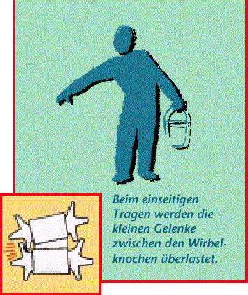
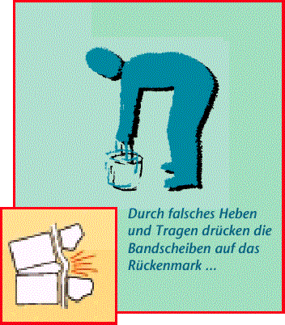
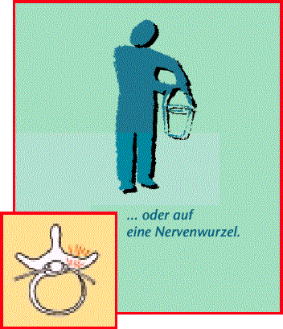

Rückenschmerzen – hier stimmt etwas nicht
Rückenschmerzen können viele
Gründe haben:
- Oft sind Rückenschmerzen ein
Signal dafür, dass das Gleichgewicht
zwischen unserem Trainingszustand
und den geforderten
Belastungen nicht stimmt.
- Sie zeigen uns an, wenn wir uns
zu einseitig belastet haben.
- Ausstrahlende Schmerzen in das
Bein können Anzeichen für einen
Bandscheibenvorfall sein.
- Auch Stress kann zu Rückenschmerzen
führen oder diese
verstärken.
- Rückenschmerzen können sich
verstärken, je mehr wir uns wegen
der Schmerzen schonen. Deshalb
bei Schmerzen keine hohen und
einseitigen Belastungen, aber
immer in Bewegung bleiben.


